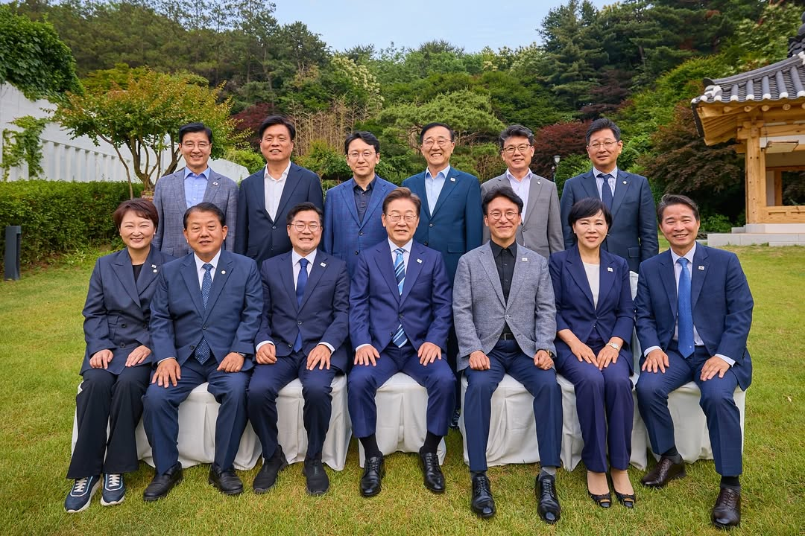
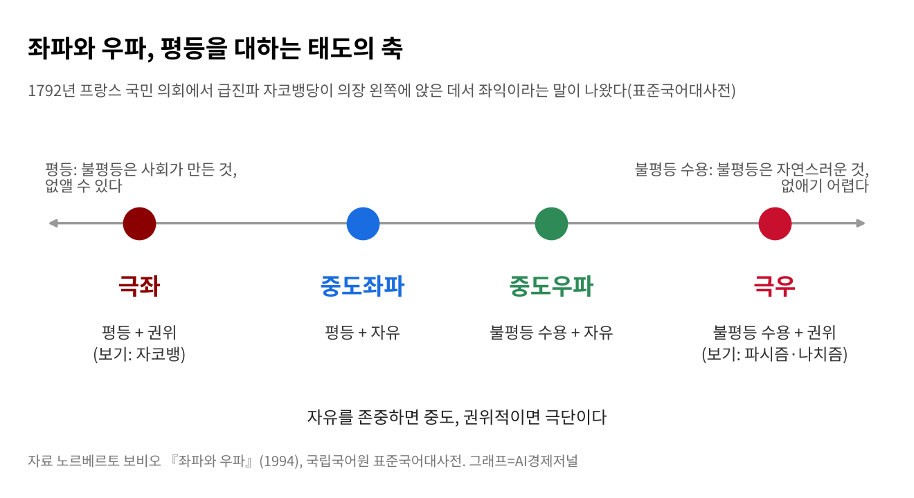
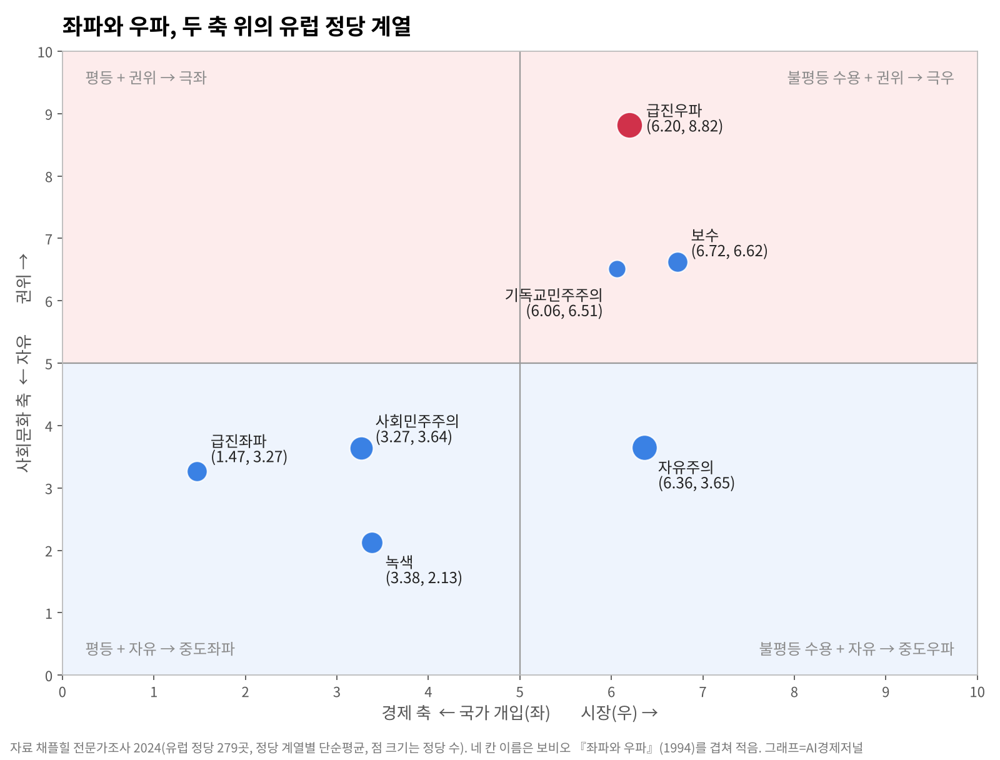
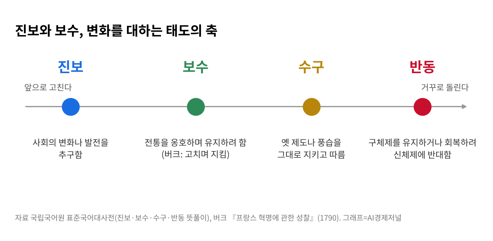

[경세제민의 눈] 진보·보수와 좌우·극우·수구를 가르는 바른 잣대
동지 사냥의 역사·철학②, 네 학문의 잣대로 잰 정치 언어
보수와 수구, 우파와 극우의 경계와 한국 정당의 좌표
AI경제저널=김갑봉 편집국장 | 대법원 전원합의체는 2018년 10월 30일 '종북'이 무슨 뜻인지 확정하기 어렵다고 판단했다. 이 말이 주체사상을 신봉하는 반국가 세력에서 대북 강경정책 비판자까지 가리키게 됐다는 이유였다.
반대의견을 낸 대법관 5명은 이 말이 상대를 민주적 토론에서 배제하는 공격 수단으로 쓰여 온 측면이 있다고 짚었다.

말이 딱지가 되는 일은 지금도 이어진다. 김민석 더불어민주당 대표는 후보 시절인 2026년 7월 20일 전당대회 합동연설회에서 "반명 분열주의는 심판해야 한다"고 했다.
잣대 없이 쓰인 말은 토론의 언어가 아니라 사냥의 몽둥이가 된다.
지난 8일 실은 1편은 노선 차이를 배신으로 끌어올리면 동지가 적이 된다고 짚었다. 2편은 그 연료가 되는 흐린 말의 경계를 긋는다. 진보와 보수, 좌파와 우파, 보수와 수구, 우파와 극우를 네 학문의 잣대로 잰다.
진보와 보수, 변화를 대하는 태도
진보라는 생각은 계몽주의에서 자랐다. 프랑스 계몽사상가 콩도르세(Nicolas de Condorcet)는 숨어 지내며 『인간 정신의 진보에 관한 역사적 개요』를 썼다. 그는 인간이 완성될 가능성에 한계가 없다고 봤다.
이 책은 그가 죽은 이듬해인 1795년에 나왔다.
보수주의 고전으로 꼽는 책은 1790년 11월 아일랜드 출신 영국 정치인 에드먼드 버크(Edmund Burke)가 낸 『프랑스 혁명에 관한 성찰』이다. 버크는 "변화할 수단이 없는 국가는 보존할 수단도 없다"고 썼다. 버크의 보수는 변화를 거부하지 않는다. 뿌리를 지키면서 조금씩 고쳐 나간다.
표준국어대사전도 두 말을 짝으로 푼다. 보수는 "새로운 것이나 변화를 적극적으로 받아들이기보다는 전통적인 것을 옹호하며 유지하려 함"이다. 진보는 "전통이나 기존의 것을 적극적으로 유지하려 하기보다는 사회의 변화나 발전을 추구함"이다.
둘을 가르는 잣대는 선악이 아니라 변화를 대하는 태도다.
좌파와 우파, 프랑스 의회의 좌석
좌우라는 말은 프랑스 혁명기 의회의 좌석에서 나왔다. 표준국어대사전은 1792년 프랑스 국민 의회에서 급진파인 자코뱅당이 의장의 왼쪽 의석을 차지한 데서 좌익이라는 말이 나왔다고 푼다.
이탈리아 철학자 노르베르토 보비오(Norberto Bobbio)는 1994년 『좌파와 우파』에서 기준을 평등으로 잡았다. 좌파는 불평등 대부분이 사회가 만든 것이라 없앨 수 있다고 본다. 우파는 불평등이 자연스러운 것이라 없애기 어렵다고 본다.
보비오는 자유를 둘째 기준으로 세워 온건과 극단을 갈랐다. 평등을 좇되 권위적이면 극좌, 자유를 존중하면 중도좌파다. 불평등을 받아들이되 자유를 존중하면 중도우파, 권위적이면 파시즘·나치즘 같은 극우다.
극단을 가르는 것은 평등관이 아니라 자유를 대하는 태도다.

경제학, 국가와 시장 사이의 좌표
채플힐 전문가조사(Chapel Hill Expert Survey, 유럽 정당 전문가 조사)는 민영화, 세금, 규제, 정부 지출, 복지국가를 잣대로 쓴다. 경제 좌파는 정부가 경제에 적극 나서기를 바라고, 경제 우파는 정부 역할을 줄이려 한다.
채플힐 조사 2024년 자료(0은 좌, 10은 우)로 유럽 정당 279곳의 경제 위치를 정당 계열별로 단순평균했다. 사회민주주의 3.27, 기독교민주주의 6.06, 보수 6.72다(AI경제저널 계산).
숫자로 재면 좌우는 감정이 아니라 위치가 된다. 정당이 선 자리는 정책 위치로 드러난다.
정치학, 권위와 자유의 둘째 축
정치학은 경제 축 위에 둘째 축을 얹는다. 채플힐 조사의 사회문화 축은 한쪽 끝에 낙태권, 동성혼, 민주적 참여 같은 개인 자유의 확대를 둔다. 다른 끝에는 질서와 전통을 앞세우고 정부가 확고한 도덕적 권위가 돼야 한다는 생각을 둔다.
네덜란드 정치학자 카스 무데(Cas Mudde)는 극우를 둘로 나눴다. 민주주의 자체를 거부하는 극단우파와, 선거는 받아들이되 소수자 권리·법치·권력분립을 거부하는 급진우파다. 무데는 포퓰리스트 급진우파의 핵심을 배외주의, 권위주의, 포퓰리즘의 결합으로 봤다.
극우를 가르는 것은 이 둘째 축이다. 같은 자료에서 급진우파의 경제 평균은 6.20으로 보수 6.72보다 오히려 낮았다. 그러나 급진우파의 권위·전통 8.82, 이민 제한 9.28, 민족주의 9.01은 정당 계열 11개 가운데 가장 높았다(AI경제저널 계산). 극우는 시장을 보는 눈보다 권위와 배타성에서 갈린다.

사회학, 균열과 정당의 조직
사회학은 정당이 어디서 생기는지 묻는다. 시모어 마틴 립셋(Seymour Martin Lipset)과 스테인 로칸(Stein Rokkan)은 1967년 두 혁명이 네 균열을 낳았다고 봤다. 국민혁명(국민국가 형성)과 산업혁명이다. 네 균열은 중심과 주변, 국가와 교회, 농업과 공업, 자본과 노동이다.
두 학자는 1960년대 정당체계가 "적지만 중요한 예외"를 빼면 1920년대 균열 구조를 그대로 담고 있다고 했다. 정당은 사회가 갈라진 틈 한쪽을 대변하며 굳는다.
조직도 정당을 가른다. 프랑스 정치학자 모리스 뒤베르제(Maurice Duverger)는 1951년 『정당론』에서 소수 명망가가 꾸린 간부정당과 당원이 당비를 내는 대중정당을 나눴다.
오토 키르히하이머(Otto Kirchheimer)는 이념 색채를 줄이고 유권자 전체를 겨냥하는 포괄정당을 짚었다. 표를 넓히면 색이 옅어지고, 색을 지키면 표가 좁아진다.
철학, 보수와 수구와 반동
보수와 수구는 다르다. 표준국어대사전은 수구를 "옛 제도나 풍습을 그대로 지키고 따름"으로 푼다. 반동은 "구체제를 유지하거나 회복하기 위하여 신체제에 반대하여 행동함"이다.
보수가 고치며 지킨다면, 수구는 고치지 않고 지키고, 반동은 거꾸로 돌린다.
헝가리 출신 사회학자 카를 만하임(Karl Mannheim)은 1927년 논문 「보수주의 사상」에서 전통주의와 보수주의를 갈랐다. 전통주의는 옛것에 매달리는 보편 심성이고, 보수주의는 근대 계급사회에서 생긴 반성적 사고다.
생각하며 지키느냐, 버릇처럼 버티느냐의 차이다.
스탠퍼드 철학백과(Stanford Encyclopedia of Philosophy)는 본래 권위주의적인 것은 보수주의가 아니라 반동이라고 정리한다.
경제학자 앨버트 허시먼(Albert Hirschman)은 1991년 반동의 논리를 역효과, 무용, 위험 세 가지로 정리했다. 고치면 더 나빠지고, 고쳐도 소용없고, 이룬 것마저 잃는다는 논리다.

대북에서 경제로, 한국의 이념 축
한국의 진보·보수는 잣대부터 서구의 좌우와 다르다. 한정훈은 2016년 『한국정치학회보』 논문에서 한국 유권자의 이념이 대북정책을 포함한 정치·사회 차원과 경제 차원으로 나뉜다고 밝혔다.
윤성이·이민규 2014년 연구에서 장년층의 진보·보수를 가른 가장 큰 잣대는 경제가 아니라 대북정책이었다.
경제정책에서 거리가 있는 민주당과 진보정당이 함께 '진보'로 불려 온 까닭도 이 대북 축에서 찾을 수 있다.
축은 움직인다. 윤성이·이민규 연구에서 청년세대를 가른 것은 이미 대북정책이 아니라 분배와 성장이었다. 구세진은 2025년 대선 분석에서 청년층의 이념 분화가 사회문화 차원에서 두드러졌다고 분석했다.
세 연구를 잇대어 읽으면 한국의 이념 축이 대북에서 경제로, 다시 사회문화로 옮겨 가는 흐름이 보인다.
대중적 진보정당과 진보적 대중정당
두 말은 중심말과 꾸밈말이 뒤바뀐다. 대중적 진보정당은 본질이 진보정당이고, 지지를 대중 속으로 넓히려 한다. 진보적 대중정당은 본질이 넓은 지지층을 겨냥한 대중정당이고, 진보 성향을 띤다.
하나는 깃발을 세운 뒤 사람을 모으고, 다른 하나는 사람을 모은 뒤 깃발을 고른다.
2011년 11월 20일 이정희 민주노동당 대표, 유시민 국민참여당 대표, 노회찬 새진보통합연대 상임대표는 "대중적 진보정당 건설에 최종 합의했다"고 발표했다.
1편의 층위론에 비춰 보면 정당 정체성은 노선보다 깊은 강령과 원칙의 층위에 놓인다. 강령에서 합의하면 통합으로 가고, 원칙이 갈리면 결별로 가기 쉽다.
나의 좌표, 네 축으로 재 보기
잣대는 남을 재기 전에 자기를 재는 데 먼저 쓰인다. 아래 열두 문항에 답하면 경제 축, 사회문화 축, 변화를 대하는 태도의 축, 대북 축 위에 자기 자리가 찍힌다. 경제 축과 사회문화 축의 자리는 [도표 2]의 유럽 정당 계열 평균과 견줘 볼 수 있다.
이 시험은 학술 검증을 거친 진단 도구가 아니라 기사에 나온 개념으로 자기 자리를 어림해 보는 도구다. 답은 이 화면 안에서만 계산하고 저장하거나 보내지 않는다. 문항은 채플힐 전문가조사 척도 정의, 표준국어대사전 뜻풀이, 한정훈(2016)·윤성이·이민규(2014)의 대북 차원을 바탕으로 AI경제저널이 지었다.
흐린 개념, 딱지와 몽둥이
이재명 대통령은 당대표이던 2023년 3월 15일 "함께 싸워야 할 우리 편 동지들을 멸칭하고 공격하는 모든 행위를 즉시 중단"해 달라고 했다. 노선이 다른 동료를 '반명 분열주의'로 묶어 심판하자는 말도 그가 멈추자고 한 멸칭과 맞닿아 있다.
극우라는 말도 잣대가 있어야 뜻이 분명해진다. 무데의 잣대로 재면 소수자 권리·법치·권력분립을 거부하는지가 급진우파를 가른다. 정책이 다르다는 것만으로는 수구도 극우도 되지 않는다.
경제 축, 권위 축, 변화를 대하는 태도를 나눠 물으면 동지와 적수, 적이 갈린다. 3편은 이 잣대로 진보정당의 분열사를 잰다.
참고문헌
- 대법원, 2018년 10월 30일 선고 2014다61654 전원합의체 판결. https://www.scourt.go.kr/sjudge/1540892042160_183402.pdf
- 국립국어원, 표준국어대사전 '보수', '진보', '수구', '반동', '좌익'. https://stdict.korean.go.kr/
- Edmund Burke, 『Reflections on the Revolution in France』, J. Dodsley, 1790년 11월. https://constitution.org/2-Authors/eb/rev_fran.htm
- Condorcet, 『Sketch for a Historical Picture of the Progress of the Human Mind』, 1795. https://sourcebooks.web.fordham.edu/mod/condorcet-progress.asp
- Norberto Bobbio, 『Destra e sinistra』, Donzelli, 1994(영역 『Left and Right: The Significance of a Political Distinction』, Polity, 1996).
- Jan Rovny 외, 「The 2024 Chapel Hill Expert Survey on political party positioning in Europe: Twenty-five years of party positional data」, 『Electoral Studies』 97, 102981, Elsevier, 2025(데이터 CHES 2024 https://www.chesdata.eu/ches-europe). https://doi.org/10.1016/j.electstud.2025.102981
- Cas Mudde, 『Populist Radical Right Parties in Europe』, Cambridge University Press, 2007. https://doi.org/10.1017/CBO9780511492037
- Cas Mudde, 『The Far Right Today』, Polity, 2019.
- Seymour Martin Lipset·Stein Rokkan, 「Cleavage Structures, Party Systems, and Voter Alignments: An Introduction」, Lipset·Rokkan 엮음 『Party Systems and Voter Alignments』, Free Press, 1967, 1~64쪽.
- Maurice Duverger, 『Les partis politiques』, Armand Colin, 1951.
- Otto Kirchheimer, 「The Transformation of the Western European Party Systems」, Joseph LaPalombara·Myron Weiner 엮음 『Political Parties and Political Development』, Princeton University Press, 1966, 177~200쪽.
- Karl Mannheim, 「Das konservative Denken」, 『Archiv für Sozialwissenschaft und Sozialpolitik』 57권, 1927, 68~142쪽·470~495쪽.
- Andy Hamilton, 「Conservatism」, 『Stanford Encyclopedia of Philosophy』, 2015년 8월 1일 첫 게재, 2025년 7월 18일 개정. https://plato.stanford.edu/entries/conservatism/
- Albert O. Hirschman, 『The Rhetoric of Reaction: Perversity, Futility, Jeopardy』, Belknap Press, 1991.
- 한정훈, 「한국 유권자의 이념성향: 통일의 필요성 인식에 미치는 효과에 관한 사례분석」, 『한국정치학회보』 50집 4호, 한국정치학회, 2016년 9월, 105~126쪽. https://dl.nanet.go.kr/detail/KINX2016341318
- 윤성이·이민규, 「한국사회 이념갈등의 세대 간 특성 비교: 주관적 이념 결정요인과 이념표상의 차이를 중심으로」, 『21세기정치학회보』 24권 3호, 21세기정치학회, 2014년 12월, 271~293쪽. https://doi.org/10.17937/topsr.24.3.201412.271
- 구세진, 「균열의 재구성: 2025 대선과 진보-보수의 이념 지형」, 『국가와 정치』 31집 2호, 성신여자대학교 동아시아연구소, 2025년 8월, 71~118쪽. https://doi.org/10.56022/ceas.2025.31.2.71
[사진 출처]
- 사진 대통령실, 「Lee Jae-myung photo with Democratic Party of Korea lawmakers-1.jpg」(2025년 6월 7일 촬영, 공공누리 제1유형), 위키미디어 공용. https://commons.wikimedia.org/wiki/File:Lee_Jae-myung_photo_with_Democratic_Party_of_Korea_lawmakers-1.jpg
※ 이 기사는 인공지능기자 위민아이(Wemin_AI)와 협력해 작성했습니다.
관련기사
- [동지 사냥의 역사·철학①] 노선 차이에 '배신자' 딱지, 동지를 적으로 모는 권력투쟁
- [정치밥상] 분열주의자들이 차린 밥상, 누구 몫이 올라가나
- [경세제민의 길] 백령공항, 재생에너지로 짓고 황해 하늘길로 키우자
- [경제밥상] 배당 48조원 시대의 밥상, 상위 1%에 몰린 숟가락
저작권자 © AI경제저널 무단전재 및 재배포, AI학습 및 활용 금지